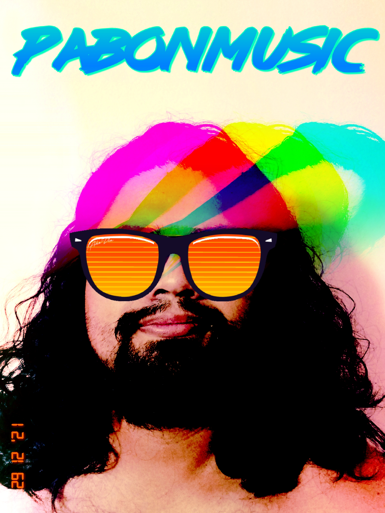

Pablo Salvador

Summary
I'm a very eclectic person. very dedicated and hard worker. love to be on time
in everything. I work as a musician. My instrument is the guitar.
right now i work as a privated chouffer.
Education
- 2012-2016, Bachelor of music education, Interamerican University
- 2016-2020, Master of Music education, Conservatory of Music in Puerto Rico
Studio & preparatory teaching experience.
- Guitar Teacher in communitys in Puerto Rico.(2014-2019)
- Añasco
- Cabo Rojo
- Mayagüez
- San Juan
- Selected Classic guitar Teachers(2005-2018):
- Linda chellouf
- Carlos Bedoya
- Luis Enrique Juliá
- Jonathan Marcial
- Jose Antonio López
- Ramón Alvarado
- Select Guitar Master Classes (2014)
- David Martinez
- Roberet Beakers
- Music festivals
- IX Boston guitar Fest: American odyssey, performer, New England Conservatory, Boston, June 2014.
- Concurso Nacional de Guitarra Clásica, performer,Centro cultural Baudillo Vega Berrios,Mayagüez, Puerto Rico, (2007)
Skills
- Great in custumer service
- Bilingual
Awards
- Responsive Web Design HTML and CSS (2023)
My Music Studio
- PABONMUSIC SR
- Street Lips Records
Contact